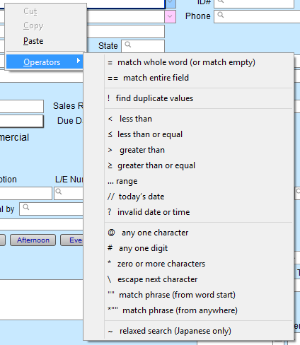
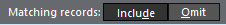
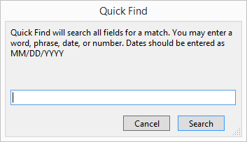

Find Feature Explained
FrameReady provides multiple, powerful search options.
How to Perform a General Find
Every file has a Find feature built into it. This allows you to search for records with a common element and can be broadly or narrowly defined as needed, e.g., find all wood moulding, or find all wood moulding that is two inches wide with the word oak in the Description field.
-
Click the Find button.
The "Enter Search Criteria" screen appears. -
Choose fields and type in your search.
-
Click the Perform Find button.
Tip: If only one item met the search criteria, then the result appears in Form View.
If more than one item meets the criteria, then the results appear in List View.
How to Perform a Multiple Find
While in the find mode, you can narrow down your search criteria by selecting additional items, e.g., find all customers who are both photographers and want your newsletter. However, sometimes you want to find all customers who are photographers and all customers who prefer newsletters.
Example One
-
Go to Contacts file and click the Find button.
-
In the Keywords tab, click the check-box for photographer and then click the check-box for newsletter.
-
Click the Perform Find button.
A list view of all contacts who meet both criteria appears on the screen.
Example Two
-
Go to Contacts file and click the Find button.
-
Click the check-box for the keyword, photographer.
-
Click the Add New Request button (upper right).
Another empty, ready-to-go search window appears. -
Click the check-box for the second keyword, newsletter.
-
Click the Perform Find button.
A list view of all contacts who meet one or the other or both criteria appears on the screen.
How to Enter Values in a Find
-
When performing a find with number values, you can use the greater than sign (>) or the less than sign (<)
-
For example, to find all values less than $500, enter: <500 or to find all values greater than $500, enter: >500
Search Operators
FileMaker Pro has a list of operators which can be used when performing a search or Find.
-
Click into a field, right-click and choose "Operators"
-
A context menu of symbols appears. Click Operators.

-
Make sure your cursor is in the field to which you wish add the symbol. Click on Operators.
Here is a chart to explain the symbols and show how they can be used in FrameReady.

How to Find Records Except Those Matching Criteria (Omit Find Feature)
You can omit records while performing a find. In other words, you can find information in your database that does not equal your specified criteria. For example, you can find all invoices except those created in the past 30 days.
To find records that don’t match criteria:
-
In Find mode, type criteria for the records to omit.
For example, to find all sales records except those for the city of London, type London in the City field. -
Click Omit in the layout bar.

-
Click Perform Find.
To find some records while omitting others:
-
In Find mode, type the criteria for the records to find.
For example, to find vendors in the state of New York, except those in the city of Albany, start by typing New York in the State field. -
Click the New Request button in the status toolbar.
If this is not visible, cancel the find, then choose View > Status Toolbar. -
Type criteria for the records to exclude, and click Omit.
To exclude Albany, you would type Albany in the City field and click Omit. -
If you wish to do more than one Omit, you must remember to select Add New Request each time before selecting the next item.
-
Click Perform Find.
Notes about the Omit Feature
-
You can have omit criteria in more than one request.
-
FileMaker Pro works through the requests in the order you create them.
-
For example, in a Clients database with clients in the US and France:
If the first request finds all clients in Paris and the second request omits all clients in the US, the found set contains all clients in Paris, France but none in Paris, Texas or anywhere else in the US.
If the order of the requests is reversed (the first request omits all clients in the US and the second request finds all clients in Paris), the found set includes all clients in Paris, France and in Paris, Texas, but no records for clients elsewhere in the US.
How to do a Quick Find
Quick Find searches ALL fields for a match and, as a result, this type of search may take longer to perform.
This button is best used when you don’t know where to look for something, e.g. Is "Taylor" the customer’s first name, last name, street or town? is "10/29/2020" the created date or completed date of a work order? is "100234" the product number or supplier ID number?
Using this button searches every field in the entire file and may produce unneeded results. You may enter a word, phrase, number or date (in MM/DD/YYYY format).
-
Click the Quick Find icon.
-
A dialog screen appears with prompt for search terms.

-
Type in your search criteria.
-
Click the Search button. Because Quick Find searches ALL fields for a match, it may take longer for results.
© 2023 Adatasol, Inc.